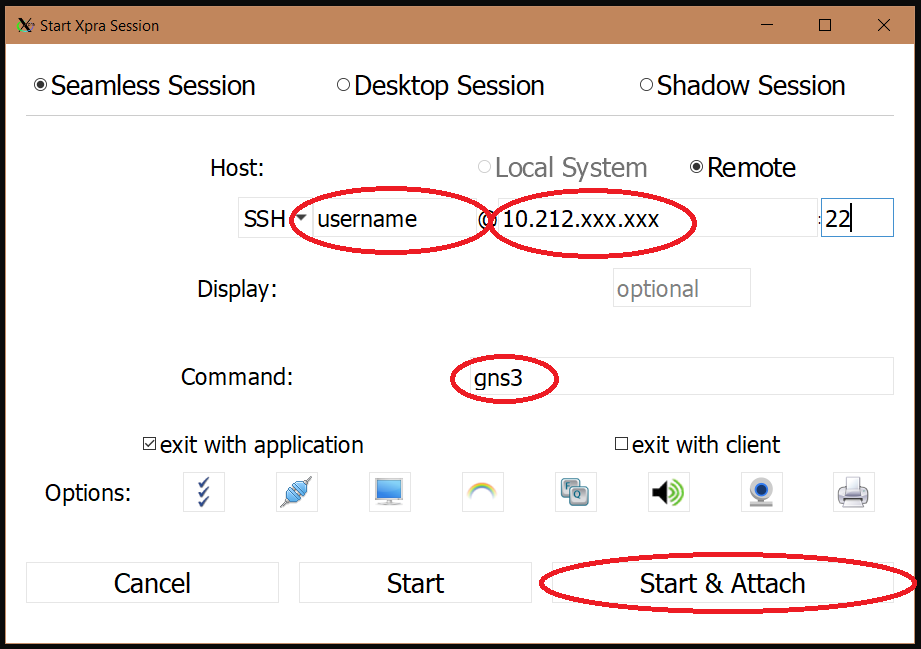
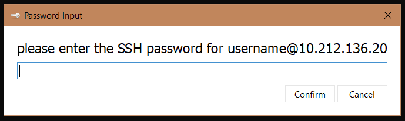

Setup.
To get started you first have to install xpra:Xpra Donwload
When you've installed xpra you can access your vm by pressing "start" as shown below
Then you enter in you ntnu username and ip that you've been provided, this ip should start with 10.212.In the Command text box you should add "gns3". Then you can press "Start & Attach"
You then enter you ntnu password to access the VM
